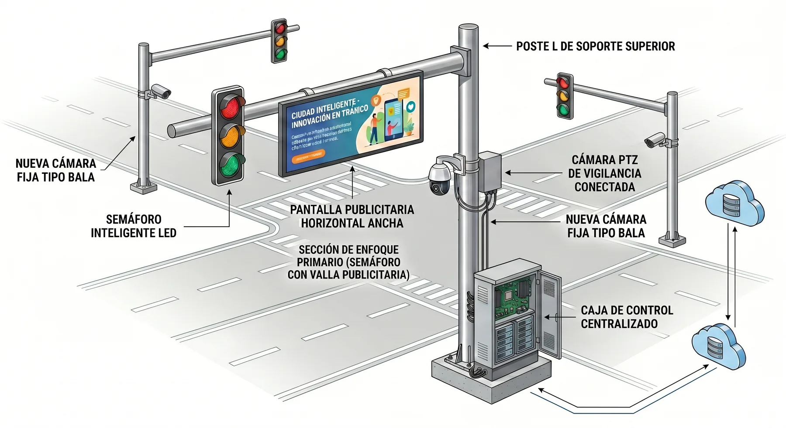
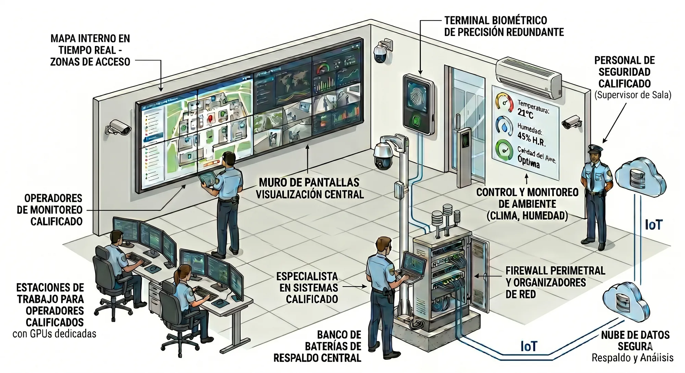

Resumen del proyecto
Proyecto Panoptes es una propuesta de Electro Shop Morandin C.A. para gobernaciones y alcaldías de Venezuela. Instala postes inteligentes con semáforo LED, cámaras, pantalla publicitaria, batería e inteligencia artificial, conectados a una central de mando.
Problema que resuelve: en el municipio piloto de Portuguesa solo funciona el 68 % de los 134 semáforos, los apagones duran hasta 6 horas y las cámaras públicas y privadas no están conectadas entre sí.
Resultados esperados: 80 % menos consumo eléctrico en los semáforos, hasta 5 horas de funcionamiento durante un apagón y avisos de emergencia a la central en 1 minuto o menos.
Inversión: el plan piloto de 1 central de mando y 10 postes cuesta 328.106,05 dólares sin IVA. El presupuesto ajustado recomendado, con planta eléctrica, capacitación, ciberseguridad, repuestos y 8 % de contingencia, es de 392.354,53 dólares. La inteligencia artificial es opcional y cuesta 105.820 dólares.
Sostenibilidad: la publicidad de las pantallas paga el mantenimiento. Con la concesión publicitaria, la operadora paga el mantenimiento técnico y el Estado aporta el personal de la central. El gasto mensual estimado de la central y los postes es de unos 5.219 dólares, en su mayoría personal que suele venir de los cuerpos de seguridad.
Plazo: un poste de demostración durante 90 días y el sistema funcionando en unos 5 meses.
Garantías: no graba conversaciones, no identifica a las personas en reuniones o protestas, un operador humano confirma cada alerta y solo se usan cámaras que miran a la calle.
Contacto: teléfono y WhatsApp 0257-251.12.82, correo correo@electroshopve.com.
Propuesta para el Municipio Piloto, Portuguesa
Una ciudad protegida, incluso sin electricidad
Postes inteligentes con semáforo, cámaras y batería que avisan de emergencias a una central de mando, sin depender de internet.

- menos electricidad en los semáforos
- 80 %
- funcionando durante un apagón
- 5 horas
- o menos para avisar de una emergencia
- 1 minuto
- de mantenimiento para el Estado con la concesión publicitaria
- $0
Cuando se va la luz, la ciudad queda a ciegas
Datos del estudio de campo hecho por Electro Shop en el municipio.
-
traffic
Solo 68 de cada 100 semáforos funcionan. Muchas esquinas no tienen ningún control.
-
power_off
Apagones de hasta 6 horas. Semáforos y cámaras se apagan justo cuando más se necesitan.
-
videocam_off
Cámaras que no se conectan. Nadie ve una emergencia a tiempo.
Un solo poste que hace todo
Elija una situación y vea cómo responde el poste. Toque cualquier pieza del dibujo para saber para qué sirve.
Todo en orden: el poste ordena el tránsito, vigila la esquina y muestra publicidad.
progress_activityCargando el dibujo en 3D
touch_appPuede girar el dibujo con el dedo o con el ratón.
Avisa a tiempo cuando alguien necesita ayuda
La inteligencia artificial trabaja dentro del poste, sin internet. Cuando ve algo grave, avisa a la central.
Si alguien cae y no se levanta, avisa a la central para enviar ayuda.
Ver todas las pruebas de la inteligencia artificialarrow_forward
Una central de mando que ve toda la ciudad
Los avisos de todos los postes llegan a una sola sala. El operador ve el lugar y envía ayuda.

- map
Un mapa con todos los postes y cámaras.
- notifications_active
Cada aviso llega con el video del lugar.
- local_police
El operador envía policía, bomberos o ambulancia.
Una inversión que se sostiene sola
$328.106
Plan piloto: una central de mando y 10 postes inteligentes.
Montos referenciales en dólares, sin IVA.
-
campaign
La publicidad paga el mantenimiento. Los comercios compran espacios en las pantallas.
-
account_balance
$0 de mantenimiento para el Estado si se otorga la concesión publicitaria.
-
psychology
La inteligencia artificial es opcional. Se agrega después, desde $105.820.
Funcionando en 5 meses
Se avanza paso a paso. Cada paso se aprueba con resultados a la vista.
-
1
Demostración
Un poste de prueba durante 90 días, sin compromiso.
-
2
Central de mando
Meses 1 y 2. Se instala la sala y se capacita al personal.
-
3
10 postes en la calle
Meses 3 a 5. El sistema queda funcionando.
-
4
Comercios e inteligencia artificial
Desde el mes 6. Se suman cámaras de comercios y la inteligencia artificial.
Reglas claras que protegen a la gente
Estas reglas quedan escritas en la ordenanza municipal.
- mic_off
No graba conversaciones. Solo reconoce sonidos de alarma.
- groups
No vigila reuniones ni protestas. Cuenta personas sin identificarlas.
- how_to_reg
Una persona decide siempre. La máquina avisa y el operador confirma.
- videocam
Solo cámaras que miran a la calle. Nunca dentro de casas ni negocios.
Electro Shop Morandin C.A.
14 años en seguridad electrónica en Portuguesa y Barinas, con obras entregadas y marcas reconocidas.

Preguntas frecuentes
- ¿Qué pasa si se va la luz?
- La batería mantiene el semáforo y las cámaras hasta 5 horas. La pantalla se apaga sola para ahorrar.
- ¿Necesita internet?
- No. Cada poste analiza su propio video y habla con la central por una red privada.
- ¿Quién paga el mantenimiento?
- La publicidad de las pantallas. Con la concesión publicitaria lo paga la operadora, no el Estado.
- ¿Y si la inteligencia artificial se equivoca?
- Nunca actúa sola. Un operador mira el video y decide si envía ayuda.
- ¿Cuánto tarda en funcionar?
- Unos 5 meses desde la firma. Antes se puede probar un poste durante 90 días.
- ¿Qué pasa con un cambio de gobierno?
- El proyecto queda protegido por un contrato de mantenimiento, una ordenanza municipal y metas públicas.
Conversemos sobre su municipio
Le presentamos el proyecto en 30 minutos, en su despacho o por videollamada.